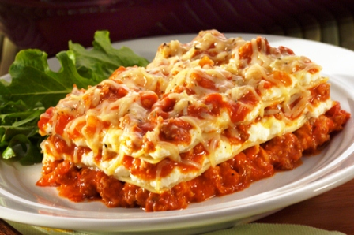
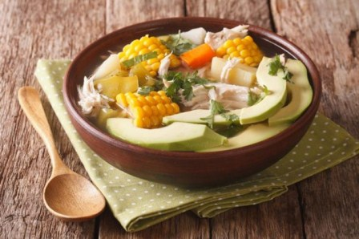
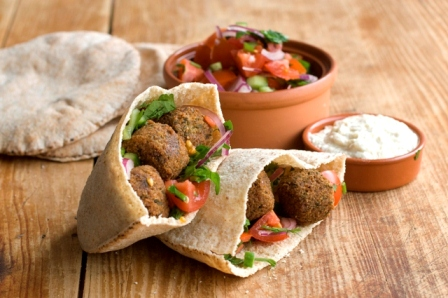
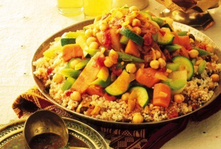

La Sazón de Lora
Un mundo de Sabor
Inicio
El plato del día
Cocina Molecular
Recetas fast
Favoritos




Historial
Cocina Molecular
Panaderia
La magia de la cocina
Cocina express
Receta del día
Hoy mamá no cocina
Cuscus Casero